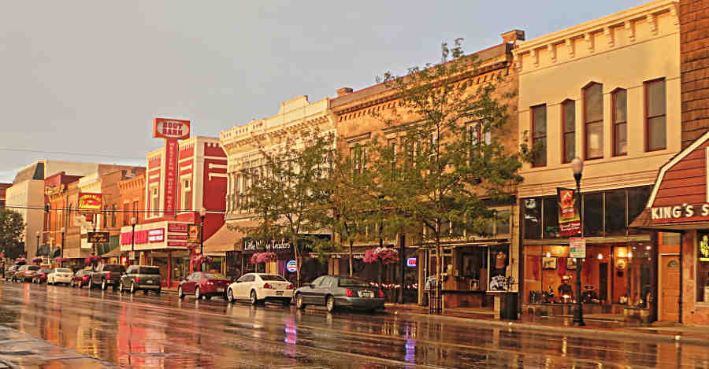

 I used the jpg version of this photo because it was able to keep the file size down without compromizing too much on quality.
I used the jpg version of this because it kept the file size down the most, mostly because it used more colors than it really needed to.
I used the gif version of this photo because it had the smallest file size.
I used the jpg version of this photo because it kept the file size down the most.
I used the jpg version of this because it kept the file size down the most.
 I used the gif version of this because, of the two types that allow transparency,
gif kept it down much more.
I used the gif version of this because, of the two types that allow transparency,
gif kept it down much more.